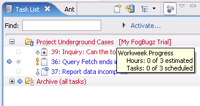
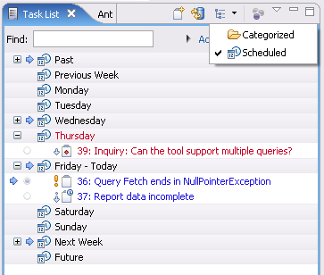

Planning
- The Planning tab of a task editor uses Scheduled date and
Estimated hours to manage the task list for the current work-week and
show progress
- At
the beginning of each day, the tasks scheduled for that day turn blue.
As the task becomes overdue, it changes color to red and pops up to the
top of the task list, seeking attention

- If you want to
Focus on Work Week (rightmost toolbar button), only the tasks for the
week show up and a progress bar appears at the top of the task list.
This progresses with the completion of the tasks scheduled for the
week. For tasks that consume more than 1 hour (the default estimate for
a task), the Estimated Hours in the planning tab needs to be changed to
the correct number of hours in order to display the progress accurately.

- The toolbar button next to the Focus on Work Week button allows classification of tasks by schedule rather than category

- The Planning tab also captures the total time a particular task has been active